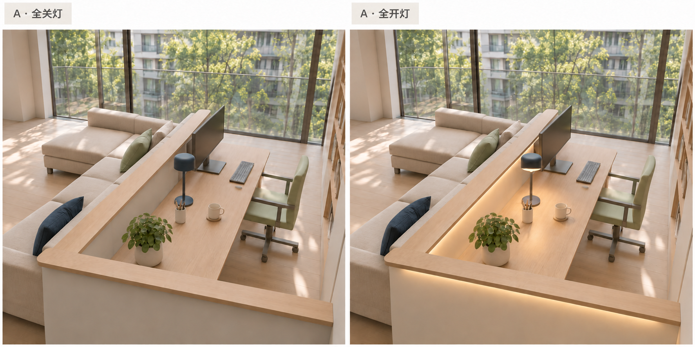
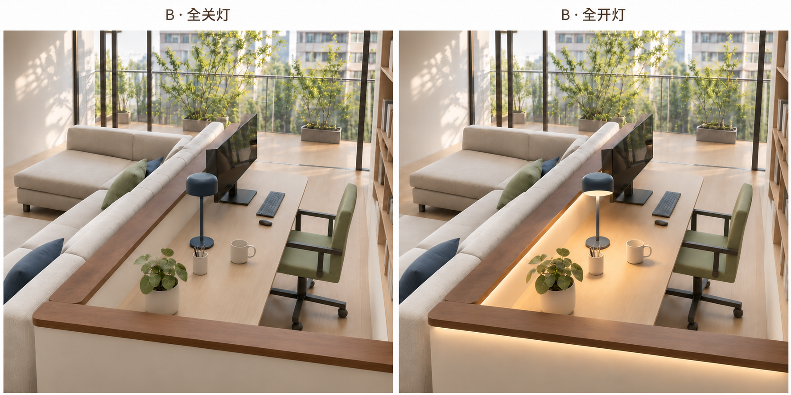
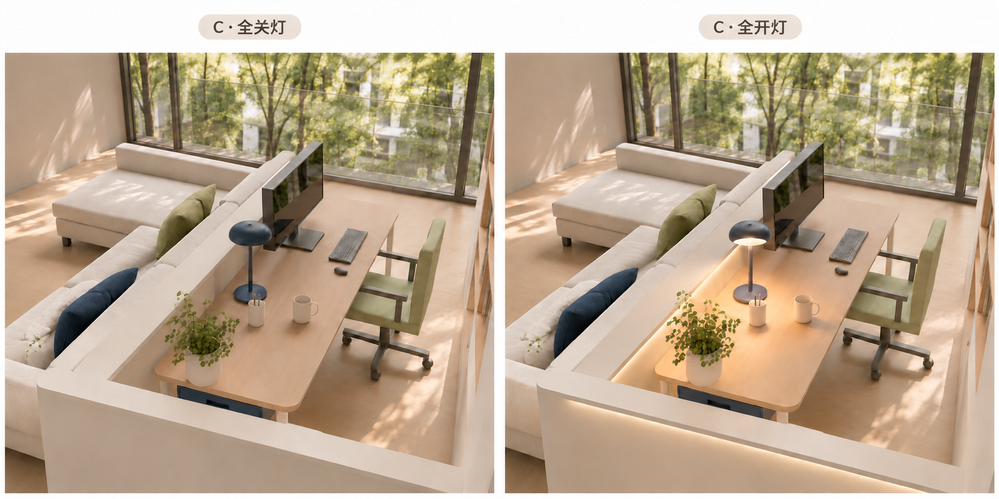
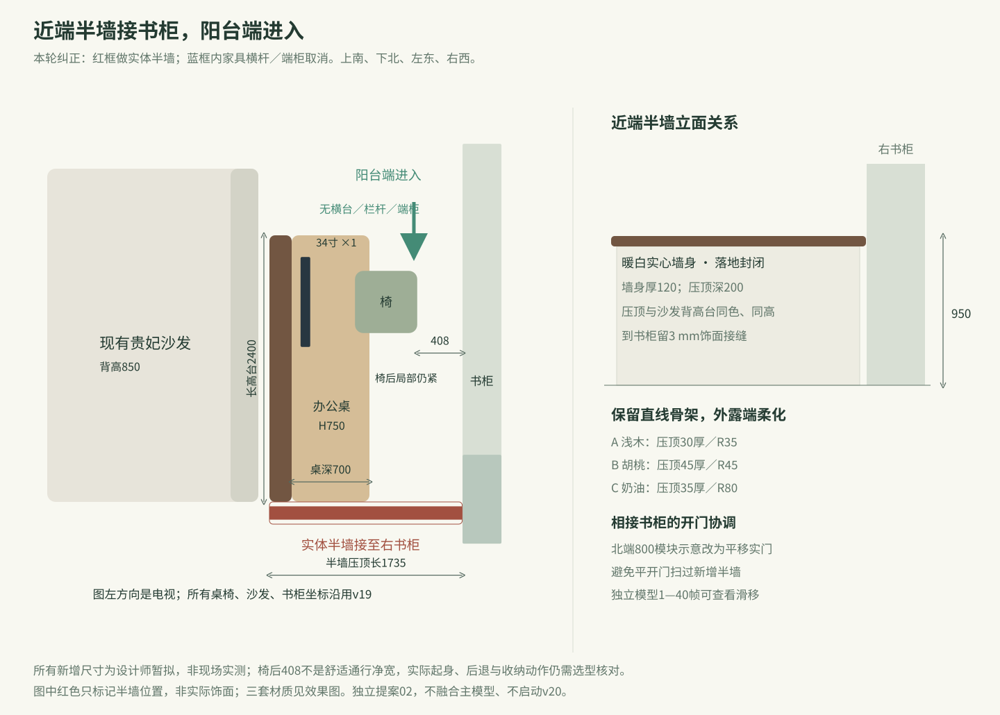

HOME OFFICE / STUDY 02 · 2026.11.06
半墙接书柜，从阳台端进入
按最新批注修正三套办公区设计：近端补上落地实体半墙，一直接到右侧书柜；顶部与沙发背长高台统一。阳台端取消横向高台、家具栏杆和端柜，留作办公区入口。沿用三套材质方向，均未选定或融合主模型。
近端实体半墙阳台端敞开桌高750／墙顶950一屏一椅主模型保留v19
OPTION A
A｜浅木薄片
浅橡木长高台与压顶，厚30、R35；暖白实体半墙。浅木桌面与灰绿座椅延续自然基底，近端浅木抽屉保留。

左：全关灯、保留自然光。右：本方案高台藏光、工作灯、环境间接光开启。摄影感概念表现；半墙外侧整段洗墙光属于表现差异，实体灯槽以内侧桌面段为准。几何以尺寸图和独立模型为准。
三套中轮廓最轻，木色应选低黄度实样，避免与地板一起泛黄。
查看同版实体参考
OPTION B
B｜深木框景
胡桃木长高台与压顶，厚45、R45；暖白实体半墙。浅木办公面保留，绿色在座椅、深蓝在台灯和软装中点到为止；原阳台端灰绿柜删除。

左：全关灯、保留自然光。右：本方案高台藏光、工作灯、环境间接光开启。摄影感概念表现；半墙外侧整段洗墙光属于表现差异，实体灯槽以内侧桌面段为准。几何以尺寸图和独立模型为准。
深木线条最明确，与既有暖白、浅木、绿蓝搭配最有层次。半墙墙身保持暖白，避免把办公区围成深木盒子。
查看同版实体参考
OPTION C
C｜奶油圆弧
奶油白实体面材长高台与压顶，厚35、R80；暖白实体半墙，浅木桌面，近端深蓝浅抽保留。

左：全关灯、保留自然光。右：本方案高台藏光、工作灯、环境间接光开启。摄影感概念表现；半墙外侧整段洗墙光属于表现差异，实体灯槽以内侧桌面段为准。几何以尺寸图和独立模型为准。
整体最柔和，端头弧度更明显。白色台面与墙身应靠材质和细缝区分，不用更黄的色差制造层次。
查看同版实体参考
这次改在哪里

| 部件 | 暂拟尺寸／mm | 关系 |
|---|
| 原办公桌 | 2400×700×750 | 位置和朝向保留，一台34寸屏、一把椅子 |
| 沙发背长高台 | 2400×200×950 | 原向阳台多伸的200取消，端头不再转弯横封 |
| 近端半墙 | 长1735；墙身厚120；顶950 | 落地实体，连续接到书柜前沿；饰面缝3 |
| 半墙压顶 | 1735×200×950（顶标高） | 与长高台同色、同高，板厚随A/B/C方案 |
| 阳台端 | 不设新增横向构件 | 横台、栏杆、端柜全取消，原固定窗及室外防护构件保留 |
| 书柜相接模块 | 原800模块，位置不变 | 示意改为双轨平移实门，避免平开扫过半墙 |
新增1735、950、120、200及R值属于设计建议，来源于当前v19模型比例，不是现场实测。桌面仍低于高台200，显示器放在750工作面。
灯光、收口与使用
光沿内缘走，入口不加横线
长高台下沿与近端半墙压顶内侧藏3000K柔光；近端只照桌面段，不把灯带横跨阳台端。工作灯、藏光和环境光分路控制。全关灯图保留白天自然光，灯槽及台灯无发光；全开灯图显示本方案全部人工光。
灯槽内退，扩散罩与线材藏在可检修位置。桌面灯建议可调色温、可调角度，以后结合实际灯具核工作照度及屏幕眩光；图像不作为照度测量。
让半墙与柜体衔接完整
近端墙身暖白哑光，压顶随方案变化；墙顶与长高台同高950。书柜前沿留3 mm细缝，相邻北端800模块改平移实门示意。独立模型1—40帧可查看滑移，已核对示意门叶不扫过半墙，具体五金、止挡与取物仍需选型。
原椅后至书柜约408、桌边至书柜838继续保留。阳台端没有新增遮挡，但原椅后局部仍紧，不能因此称为宽裕通道；坐下、后退及清洁动作留待后续优化，不擅自移动现有桌椅。
方案判断与交付状态
三套中我仍倾向B：深木压顶把空间边界勾清楚，暖白实体墙保留轻盈感，绿色和深蓝有明确落点。A更安静，C更柔和。本轮确认的是半墙范围与入口方向，尚未替你选择材质方案。
几何与实用性：三份独立模型已保存重开，回读半墙接至书柜、顶高950，阳台端横台和端柜为零；桌高750、单屏单椅保留。书柜平移门为设计师处理接口的提案，非已定产品。审美与图像：逐图查看摄影感、材质、光影和红／蓝区域是否按批注执行；概念图的木纹、窗景、细部及局部透视不作为毫米级证据。
范围：独立办公提案02。主模型v19、28件家具坐标、原VR和餐边柜独立11未因本轮变更，未启动v20。未作浏览器视觉验收；交付检查以图片解码、逐图查看和离线链接核对为依据。